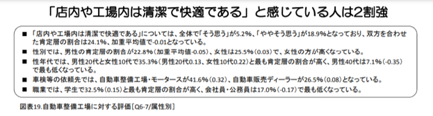
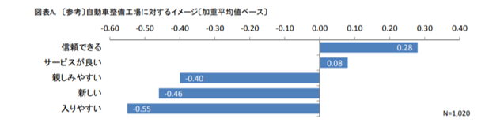

GW中に
2021.5.13
迷走しています。糸見啓介です。
4/30の報告会で、プロジェクト内容が固まっていない自分は「もっと現場を見る必要がある」という結論に至りました。
そこで家族に許可をもらい、体調管理を徹底した上で、GW中に帰省して働かせてもらうことにしました。
整備工場で働かせてもらっている中で、整備工場がまさに「３Ｋ」の典型的な例であると感じ、そのイメージを払拭できるようなモノづくりをしたいと考えた。
(「３Ｋ」とは、「きつい」「汚い」「危険」の頭文字を取った過酷な労働環境を意味する用語です。)
例えば、整備工場は空調設備が整っていない工場で作業を行う必要があり、特に夏や冬は労働環境が整っていない状況の中、力仕事をこなさなければいけません。
さらに、油汚れが酷く、自分自身が汚れるだけではなく、工場の床や壁・工具が常に汚れてしまっている状況でした。
平成29年に日本自動車整備振興会連合会が行った「自動車整備工場のイメージに関するアンケート」によると、「店内や工場は清潔で快適である」と感じている人はわずか2割強であり、実際に顧客側も清潔さをあまり感じられていないのが現状である。

さらに、同アンケートによると、整備工場に対する「親しみやすい」「新しい」「入りやすい」という評価項目の点数がかなり低かった。
自動車整備業界が不人気で整備士志望者数が減少傾向にあるのはまさに、「清潔感がなく、親しみを持ちにくい」ということが理由だと感じた。

自分の活動によって、労働環境が問題視されているこの業界に親しみを持ってもらい、３Ｋのイメージを払拭することで、将来の自動車整備士志望者の増加につなげたい。
糸見啓介
〇参考〇
一般社団法人 日本自動車整備振興会連合会 『自動車整備工場のイメージに関するアンケート』
https://www.jaspa.or.jp/LinkClick.aspx?fileticket=Ez0jn3hLKmQ%3D&tabid=323